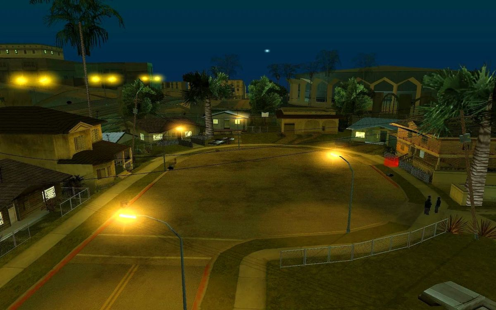
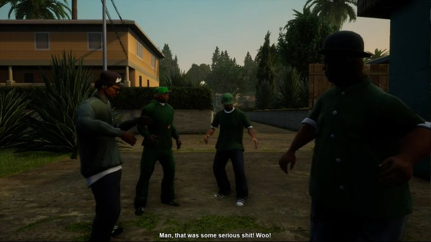
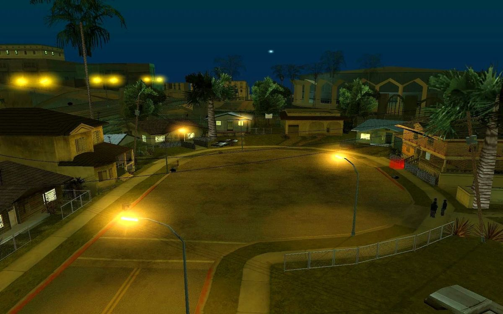
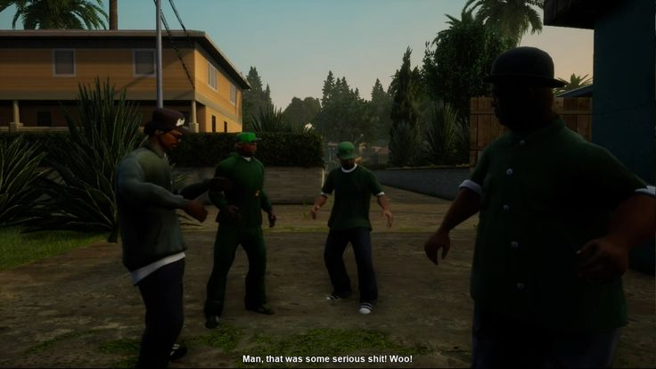

Welcome To Grove Street
Grove Street is not just a gang it’s a family. We stand together, protect our turf, and live by loyalty and respect. This place is for true Grove members only. If you’re ready to ride for the family, you’re welcome here.
Los Santos, 2025. The streets ain’t what they used to be. After years in exile, CJ (Carl Johnson) steps back onto Grove Street. The block's changed—abandoned houses, faded green tags, and rival gangs patrolling the corners like they own it. But one thing hasn't changed: Grove Street is home. CJ ain’t alone. He brought Big Smoke’s nephew, Dre, and Sweet's son, Lil D, both loyal to the green. The Ballas got cocky—thinking Grove was finished. But the silence was just the calm before the storm. Chapter 1: The Green Awakens Word spreads fast—“CJ is back.” OGs crawl out of hiding. Ryder’s cousin brings crates of old Tec-9s and AKs. Lil D takes over the block’s lookouts, and Dre starts handling deals to raise money. The green bandanas come out. Grove Street is waking up. The first hit? Idlewood, 2 AM. Fast, loud, surgical. Ballas didn’t see it coming. Spray cans mark the walls with “GSF 4 LIFE.” Chapter 2: War in the Shadows But the Ballas ain’t soft. They bring in Vagos for backup, turning the city into a war zone. Drive-bys increase. Allies are shot. Even Tenpenny’s replacement on the force is corrupt—feeding info to enemies. CJ knows this ain't just about turf. It’s about legacy. They call in Toreno, the old government ghost, to secure weapons. Meanwhile, the streets buzz with the chant: “Grove Street’s back!” Chapter 3: Legacy The final battle hits Verona Beach. Sunset paints the sky red. GSF rides out in green lowriders, music blasting, hearts beating like drums. Fire, bullets, screams—chaos. But by sunrise, Grove Street flies their flag on the pier. The war is over. For now. And in the heart of Los Santos, CJ stands under the streetlight, watching the stars.


 



.png)